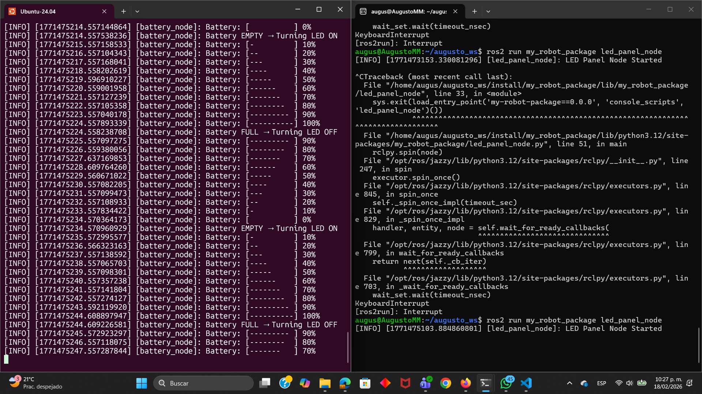

Activiy ROS Custom Interfaces
Introduction
In this activity, a distributed system was developed in ROS 2 to simulate the interaction between a battery and an LED panel using custom interfaces. The main objective was to implement communication between nodes through a user-defined service and a custom message. In the following image you can see the diagram of how it should work:
{kind=link}
Battery code
#!/usr/bin/env python3
import rclpy
from rclpy.node import Node
from secondinterface.srv import SetLed
class BatteryNode(Node):
def __init__(self):
super().__init__('battery_node')
self.client = self.create_client(SetLed, 'set_led')
while not self.client.wait_for_service(timeout_sec=1.0):
self.get_logger().info('Waiting for set_led service...')
self.battery_level = 100
self.discharging = True
self.timer = self.create_timer(1.0, self.update_battery)
self.get_logger().info("Battery simulation started")
def update_battery(self):
if self.discharging:
self.battery_level -= 10
else:
self.battery_level += 10
self.print_battery_bar()
if self.battery_level <= 0:
self.battery_level = 0
self.get_logger().info("Battery EMPTY → Turning LED ON")
self.send_request(0, True)
self.discharging = False
elif self.battery_level >= 100:
self.battery_level = 100
self.get_logger().info("Battery FULL → Turning LED OFF")
self.send_request(0, False)
self.discharging = True
def print_battery_bar(self):
bars = int(self.battery_level / 10)
bar_display = "[" + "-" * bars + " " * (10 - bars) + "]"
self.get_logger().info(f"Battery: {bar_display} {self.battery_level}%")
def send_request(self, index, state):
request = SetLed.Request()
request.led_index = index
request.state = state
self.client.call_async(request)
def main(args=None):
rclpy.init(args=args)
node = BatteryNode()
rclpy.spin(node)
rclpy.shutdown()
if __name__ == '__main__':
main()
This code implements a node named battery_node, whose function is to simulate the behavior of a battery. It initializes the battery level at 100% and uses a timer that executes every second to decrease or increase the level in 10-unit intervals depending on the current state.
When the level reaches 0%, the node sends a request to the service to turn on an LED and switches to charging mode. When it reaches 100%, it sends another request to turn the LED off and returns to discharging mode.
LED code
#!/usr/bin/env python3
import rclpy
from rclpy.node import Node
from secondinterface.msg import LedPanelState
from secondinterface.srv import SetLed
class LedPanelNode(Node):
def __init__(self):
super().__init__('led_panel_node')
self.leds = [0, 0, 0]
self.publisher = self.create_publisher(LedPanelState,'led_panel_state',10)
self.service = self.create_service(SetLed,'set_led',self.set_led_callback)
self.timer = self.create_timer(1.0, self.publish_status)
self.get_logger().info("LED Panel Node Started")
def publish_status(self):
msg = LedPanelState()
msg.leds = self.leds
self.publisher.publish(msg)
def set_led_callback(self, request, response):
if 0 <= request.led_index<len(self.leds):
self.leds[request.led_index] = 1 if request.state else 0
response.success = True
response.message = "LED updated"
else:
response.success = False
response.message = "Invalid index"
return response
def main(args=None):
rclpy.init(args=args)
node = LedPanelNode()
rclpy.spin(node)
rclpy.shutdown()
if __name__ == '__main__':
main()
This code implements a node named led_panel_node, whose purpose is to manage the state of a three-LED panel using custom interfaces. The node initializes an array representing the on/off state and periodically publishes this state topic using a custom message, and simultaneously operates as a server. Through this service, it receives requests specifying which LED should change state and whether it should be turned on or off and responds indicating whether the operation was successful.
Results
